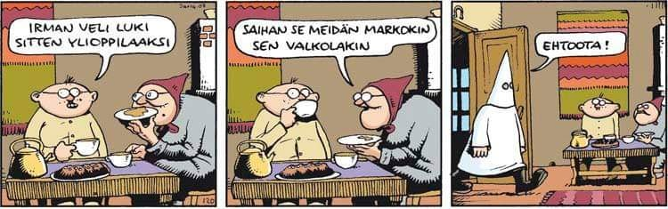

Date/Time:
Don’t watch TV coverage of Covid-19! — by Richard Stallman
Don't watch TV coverage of Covid-19! (Or "social media"; the details are different.) Watching repetitive coverage of something frightening can interfere with clear thinking, even traumatize people.
TV news coverage of a crisis struggles to fill 24 hours a day with "information", notwithstanding the fact that the actual flow of new information about the crisis is nowhere near sufficient to fill that time. What do they do? They repeat. They present tangential and minor details. They make the same points in different ways. They belabor the obvious. They repeat.
If your goal is to be informed, you don't need to dwell on the crisis for hours every day. Not even one hour a day. Getting your news in this inefficient matter will waste a lot of time — and worse.
In addition, it will make you more and more anxious. Someone I knew in 2001, who lived in California. spent all day on Sep 11 and following days watching the TV coverage. Afterward perse was afraid to go outside, watching for terrorist airplanes. TV made it possible for per to be traumatized by events 3000 miles away.
That was an unusually strong case. Most people did not get so traumatized as that. That does not imply it did not affect them. I suspect that the TV coverage may have shifted millions of people's perceptions, so that they overestimated the danger of terrorism while downplaying the danger of laws that take away freedom. This would have smoothed the path for careless passage of the dangerous USA PAT RIOT Act and its massive surveillance.
In any a good, general textual news site, you can read the things you really want to know about Covid-19 in 10 or 20 minutes a day. Then you won't fall behind on your work, and you won't be brainwashed into panic.
Keep calm and carry on!
Copyright © 2020 Richard Stallman Verbatim copying and redistribution of this entire page are permitted provided this notice is preserved
Richard Stallman - Don't watch COVID19 TV coverage

Hyvää pääsiäistä! Pitkäperjantaina juhlitiin Jeesuksen tuomiota, teloitusta ja pääsiäissunnuntaina eli "sukkasunnuntaina" (lauantai oli "lankalauantai") valekuolemasta ylösnousemistaan, ja Titus Flaviuksen voittokulkua kristinuskon tuomisessa Rooman valtakunnanuskonnoksi - hänen tarkoituksensa oli kesyttää juutalaiset. Hassusti kuitenkin kävi. Rooma hajosi kahtia (länsi-Rooma jossa oli roomalaiskatolinen kirkko, ja itä-Rooma jossa oli kreikkalais-katolinen (ortodoksinen kirkko)) ja Rooma hajosi lopulta kokonaan (kun Rooman kansalaisuudella ei ollut enää merkitystä), ja Rooma hajosi sisäisiin ristiriitoihinsa, joihin liittyivät mm. mongolien hunnien, alaanien, vandaalien ja goottien, frankkien ja burgundien ja langobardien (lombardien) kansainvaellukset ja asettuminen Roomaan - tekivät omat kuningaskuntansa, mm. Vandalusian Iberiaan eli Espanjaan - siellä olivat visigootit ja vandaalit ja sitten oli vielä Italian ostrogootit. Germaanit kristillistyivät.
Caesar's Messiah The facts might not be true in the Caesar's Messiah book by Joseph Atwill but it is an interesting viewpoint that perhaps the Romans (and the Greeks, and some of the Jews) wanted to pacify the Jews that had become wild and influential in the Mediterranean area in the first centuries A.D. (Anno Domini). For me Jesus was a Prophet and a Messiah, but also a very political figure whose ideology inspired for example absolute monarchy, but also nationalism and socialism. There sure was political incentive for the Romans to create the Roman Catholic Church to counteract the effect of Judaism in the Mediterranean area. Jesus was a healer, a politician and a prophet, and there was not only just one Jesus - one was Jesus of Nazareth Christ, the other was Jeshua bin Stada, then there was Jeshua ben Pandira, and others. The religion "Christianity" rose out of the necessity of the Greeks, the Jews and the Romans to create a uniform ideology and religion to unite the whole Rome. I am myself a Christian of the Folk Lutheran Church of Finland but am interested in *what really happened* historically at the era in the geographical areas at question geopolitically.
Mann
The joyous man is dear to
his kinsmen;
yet every man is doomed to fail his fellow,
since
the Lord by his decree will commit the vile carrion to the earth.

VAROITUS: NÖRTTIYS VOI AIHEUTTAA NESTEHUKKAA JOS JUO LIIKAA KAHVIA!
The next link is an information link about computer programming that I have made - I created some of the programs myself and some of them were modified by me. Seuraava on infolinkki tekemistäni tietokoneohjelmien muutoksista - jotkut ohjelmat tein itse ja jotkut ovat minun muokkaamiani:
Ohjelmointi - programming - there is my Debian GNU Omega Finnish translation C programming project - it is an ASCII graphics game, with color. Should run on LINUX systems, and similar. Might run on even old-style MS-DOS and other systems. It utilizes the command line shell. Includes other practice C and C++ programming, including a simple Artificial Intelligence questioner bot.
Päihdelinkki - tietopankki - tietoiskut - unilääkkeet
Skinhead ReggaeAlun perin skinheadit olivat sekä mustia jamaikalaisia että valkoisia eurooppalaisia.
Joensuun kaljupäiset pähkinät - 1997 ylioppilaslehti.fi
Minä olin sänkitukkainen 1995 joulukuusta, mutta annoin hiusteni kasvaa takaisin ja mieluiten pidin ruutupaitaa kun minulle oli kasvanut semmoinen pystytukka. Kun olin sänkitukkainen, pidin vihreätä Rai Ski-pilottihiihtotakkia, sinisiä farkkuja ja ruskeita nahkasaappaita.
Pidin itseäni sekä SDP:n että KePun kannattajana 1995-1996 ja koulukaverini huomasivat, että olin enemmänkin armeijanvastainen punkkari kuin mikään äärioikeistolainen skini, ja kun heillä oli niitä suomenlippuja vaatteissaan ja pilottitakkeja ja oli lyhyttä tukkaa niin minä olin jo kasvattanut hiukseni takaisin.
En halunnut olla missään tekemisissä rasistisen 1997-skini-ilmiön kanssa (joka alkoi kai jo 1995 syksyllä tai 1996 keväällä, 8. luokalla - ja se jatkui 9. luokkaan 1996 syksy ja 1997 kevät); vaan halusin olla grunge-punkkari vuonna 1996 ja siksi jopa eräs miespuolinen koulutoverini uhkaili minua puukolla (koska kuulemma näytin Johnny Rottenilta), mutta otin rauhallisesti ja hän laittoi pois puukkonsa, ja menimme luokkahuoneeseen. Koulukaverini leikkivät pulpetteja vasten puukoillaan. Olimme 8. luokalla yläasteella 1995 syksy-1996 kevät. Kukaan ei kuollut, eikä ketään puukotettu, mutta oli aika järkkyä porukkaa.
Päättelin yläasteella että poikien ja tyttöjen jutut olivat ihan perseestä ja kuuntelin The Power of Trinity reggae-CD:tä, Nirvanaa, Metallicaa yms. Kerran yksi koulutoverini työnsi toisen koulutoverini päin ovea, ja ovi kaatui taaksepäin mutta kukaan ei loukkaantunut. Alkoi nuorilla miehillä jo voimaa olemaan, koska olimme jo 15-vuotiaita.
The Specials - A Message To You Rudy
The text is my own variation of several other versions, that are ancient Germanic rune poetry: The rune Man/Mann/Madr/Madur - "A joyous man is dear to his fellows but he is destined to let his fellows down for the vile carrion will be put into the Earth".
Runes: ᛊᚨᛚᚨᚥᛁᛖᛊᛏᛁ = SALAVIESTI
Vercingetorix et Caesar

Päihdelinkin sivustolta: "Väsyttävät psykoosilääkkeet:
Väsyttäviä psykoosilääkkeitä käytetään unilääkkeenä ensisijaisesti silloin, jos unettomuuteen liittyy alkoholin liikakäyttö tai potilaalla on näiden lääkkeiden virallisten käyttöaiheiden mukaisia sairauksia tai oireita (esim. kaksisuuntainen mielialahäiriö tai psykoosioireita). Vaikutus unettomuuteen perustuu H1-reseptorien salpaukseen kuten monilla muillakin unettomuuteen käytettävillä lääkeryhmillä. Eniten käytetty lääkeaine on ketiapiini, mutta myös olantsapiini ja risperidoni tulevat kyseeseen joissain tilanteissa. Perinteisistä psykoosilääkkeistä voidaan käyttää klooriprotikseenia, levomepromatsiinia, melperonia ja promatsiinia. Ketiapiinin, levomepromatsiinin ja promatsiinin käyttöön yhdessä alkoholin kanssa liittyy kohonnut kuolleisuus."

My own text, copyright 2020: Parasetamoli on yliannostettuna erittäin vaarallinen maksatoksinen myrkkylääke, joka tappaa ihmisen aika tehokkaasti. Jos parasetamolin kanssa ottaa alkoholia, niin se on henki pois hyvin herkästi monellakin. Viranomaiset suosittelevat parasetamolin käyttöä virustaudeissa, ja se johtuu siitä että tulehduskipulääkkeiden (NSAID) kuten ibuprofeenin käytöstä ei ole näyttöä hyödystä virusinfektion yhteydessä, ja ibuprofeeni rottakokeissa heikentää koe-eläinten immuunivastetta. Luin tänään varoituksen muistaakseni osoitteesta spc.nam.fi - toki luin myös Lääkeinfo.fi-selosteen, jossa oli samantyyppistä tekstiä - parasetamolista, ja myös parasetamoli saattaa heikentää elimistön immuunivastetta ja aiheuttaa jopa agranulosytoosia(!) Oikeasti, älkää uskoko väitteitäni mitä kirjoitan nettiin vaan Katsokaa Vaan Googlesta, KVG, kannattaa tehdä Google-hakuja, ja jos joku lähde on huono ja toinen tai kolmas tai vaikka monennes on parempi lähde niin uskoa parasta lähdettä. Joskus oikein tieto löytyy vaikka kirjaston kirjasta. En suosittele uskomaan iltapäivälehdistön väitteitä terveydestä, eikä Wikipedia ole sen luotettavampi kuin iltapäivä- lehdistökään - populaarikulttuuristahan on kyse, ns. "populaaritietoudesta" josta iso osa voi olla ihan täydellistä roskaa.

It is one of the simplest polynomials, and it is asymptotic - the bigger the value x is, the smaller the value y is and the bigger the value y is, the smaller the value x is, for example y=1/x where x=2 y=1/2=0.5 etc.
Wikipedia - Riemann sphere. Where y=1/0=∞ and y=x/0=∞. When x is bigger than 0, x>0, then y is bigger than 0, y>0, x > 0 ⇔ y > 0, then y=x/0=+∞=+infinity, when x≠0. When x is smaller than, x<0, 0 then y is smaller than 0, y<0; x < 0 ⇔ y < 0; y=x/0=-∞=-infinity.
Also, it should be noted that 0/0=not a number, also 0/0=undefined=NULL group=empty group={}.
Also because 0*a=0 when a=∞ then 0*∞=0 and 1/∞=very close to 0, in fact it can be called 0 and very large numbers like ∞=+inf and 2∞=2*+inf and x*inf when x is equal to or bigger than 1 can be called "practically infinite".
Bijection, injection and surjection according to Wikipedia. The simplest
case is f:X->Y where  , and I think
it is called a bijection, a bijective function - and an injection, an injective
function. x=x' and f(x)=f(x'). For all y there is an x and if y=f(x) for all
x there is a y. Also y=f(x) and y'=f(x'). Of course if y=x then it is so.
Using logical transposition
, and I think
it is called a bijection, a bijective function - and an injection, an injective
function. x=x' and f(x)=f(x'). For all y there is an x and if y=f(x) for all
x there is a y. Also y=f(x) and y'=f(x'). Of course if y=x then it is so.
Using logical transposition 

Some math, Euclidean distance:
An example of a
Euclidean distance d = sqrt( (x2-x1)² + (y2-y1)² ).
I can create an
example of a Euclidean distance "d" like thus:
4² = 16, 3² = 9. d = sqrt( 16 + 9 ) = sqrt( 25 ) = 5.
Now I can create examples:
d = sqrt( (14-10)² + (9-6)² ) =
sqrt( 4² + 3² ) = sqrt( 16 + 9 ) =
sqrt( 25 ) = 5. When x2 = 14, x1 = 10,
y2 = 9, y1 =6, then {x1
= 10, y1 = 6} = [x1, y1] = [10, 6] and
{x2 = 14, y2 = 9} = [x2, y2]
= [14, 9] then
Euclidean distance d = sqrt(14-10)²+(9-6)² =
sqrt(4²+3²) = sqrt(16+9) = sqrt(25) = 5.
So the Euclidian distance d=5.


Disclaimer: I have no qualification nor education in health care, I am more of a computer programmer than a medicinal expert. I did the comments on medications only because I want people to be critical about what they read on the net and I want to do medication calculations because a friend of mine told me to do them on my homepage. The only official sources of medicine and health information are officials practicers of medicine and health care, those who have both the education and the qualifications, and who have practical experience in taking care of people for decades. I am not an expert in health care, I am a computer geek.
Tässä tietoa Orion Pharma Opamox-tuotteesta, Lääkeinfo.fi-saitilta.
A site: CardioSmart - Oxazepam. Oxazepam is a type of sedative mood medication that is often meant for people to help sleep, especially if they have anxiety or depression or both, but it is also an antianxiety agent that can be taken in low doses exactly as prescribed by the doctor. The medication should not be taken against the advice of a health care worker such as a medical doctor, or a registered nurse that negotiates with the doctor. The pharmacists are not always the best authorities in these kinds of matters, because they often want to sell medicine, and the doctors and nurses have to take care of the patient in a way that they do not lose their job or get sued by a patient who has taken a sedative for 60 years straight(!)
Oxazepam and other benzodiazepines and mood (and psyche) altering substances (drugs) can have serious side effects and serious withdrawal effects, but oxazepam's are usually less severe than for example of lorazepam (another benzo), and of several other various benzodiazepines. Often alcohol and benzodiazepine withdrawal have similar symptoms. But do not just take my word for it (as I am just a random bloke typing on a keyboard at a computer connected to the Internet). Ask a medical doctor or a registered nurse or a pharmacist (I am not). I have no education in health care, I am just an outpatient and have been using health services for all my life, usually because of somatic reasons but of course I may have other problems as well that I will not discuss here. Remember: Almost all of the benzodiazepines that have been or are marketed as antianxiety, antipanic or sleeping medications are illegal to use, possess, give, receive, keep, buy or sell without a prescription. They are legal drugs when used with a legal prescription, but they are illegal if used without a prescription. They are drugs as in the Finnish words "huume" and "huumausaine" ("haoma" in Avestan).
As far as I know "huume" is a word related to the Avestan word "haoma" and Sanskrit word "soma". If I am not mistaken, "soma" also means "body", for example "somatic" means "bodily" and the word "humus" and "hummus" are "ground" and "dirt", and originally everything that was a "huume" was usually from a plant, a "huumekasvi", "an intoxicating plant". "Päihde" is another word for it. "Päihdekasvi" is a plant that has some intoxicating parts. The English word "intoxicant" can be translated into Finnish as "päihde". "Psychoactive substance" is "psykoaktiivinen yhdiste" where "yhdiste" is "compound" and of course "psyko" is "psycho" and "aktiivinen" is "active", obviously.
Caution should be exercised when using mood-altering substances, and substances that alter behavior and perceptions. For example antipsychotics and hallucinogens (psychedelics) alter perceptions, and substances such as anti-depressants, anti-psychotics and sedatives (depressants, such as alcohol or benzodiazepines) alter mood and behavior, and even make people move in a different way. It has been observed too often by people here in the Western countries such as Finland that long-time use of alcohol can really make a person unhygienic, get a swollen red face, especially the nose and it can be heard from the speech, and seen from the behavior that a person is an alcoholic, and acute alcohol intoxication can be seen very well when looking into the eyes of the drunken person.
A benzo document - about benzodiazepine addictionI am disqualified from giving any official medicinal advice and not able to practice any medicine nor health care since I am not a health care expert, have no education in health care and never worked for health care; I am an information technician, a computer geek and a mathematician. I did the following mostly out of curiosity and because the mathematics is simple enough, understandable and interesting (at least to me):
How to do calculations involving medication (this is not official information, this is the way it was done to me by the health care authorities): The "standard way" of denoting how medications are dealt out in the Finnish health care system is writing morning (milligrams) + day(milligrams) + evening(milligrams) for the medicine in question, for example an example dosage of quetiapine (Seroquel, Ketipinor, Quetiapin) could be 100mg+100mg+400mg, so the first 100mg is for morning, the second 100mg is for day and the 400mg is for evening. If something like oxazepam is given in addition to the quetiapine it could be written like: 15mg+15mg+15mg, that is a quite high dose of oxazepam, all in all (15+15+15)mg=45mg. The daily dose of quetiapine would be (100+100+400)mg=600mg, a standard dose for a depressed patient, but if the patient is schizophrenic or manic, a higher daily dose could be needed, usually no higher than 800mg, and it could be put as 100mg+100mg+600mg=800mg (per day).
There are things like the chlorpromazine equivalent (CPZ) for antipsychotics like quetiapine and the benzodiazepine equivalency (BZD) for anxiolytics and sleep medications, that are of the benzodiazepine class, and it could be counted thus: 15mg of oxazepam is equivalent to 5 mg of diazepam when the ratio 3:1 is used, so 5mg of diazepam = 15 mg of oxazepam, and then the ratio is 1:3 (in weight, usually milligrams, mg).
Another converter uses a 2:1, or 1:2 ratio for BZD equivalency, for oxazepam and diazepam so 1 mg of diazepam would be equivalent to 2 mg of oxazepam. For example: 15mg of oxazepam, the standard dose for one tablet would equal to 7.5mg of diazepam, and it is usually rounded up to the next whole milligram, so it would be 8mg of diazepam.

It is a difficult question whether the operating system is just the kernel, as Tanenbaum would put it, or as Stallman claims includes the system tools with which various system-level operations can be done, for example by using "rm path_to_file_name/filename" to remove a file - that would be usually either a binary that can be executed by for example by the shell, by the user - either with a keyboard or a ready-made script or could even be called within a C programming language compiled ready made binary with the system("rm path_to_file_name/filename") function call, or it could be put into a shell script.
For example remove_file.sh could include the command in question. System tools are important for the housekeeping of the system, and nowadays all kinds of graphical tools are available for file manipulation, and a graphical user interface can be the optimal solution for an end user that has little or no knowledge of hand-written computer commands that include a command-line interface (a CLI), that is included for example in the usual GNU/Linux tool in the path /bin/bash, the shell utility program is called the Bourne Again SHell, BASH.
It can be argued that the system is GNU, and Linux is one of its kernels as Stallman put it, but it can also be argued that GNU is a collection of utilities (tools) that can use any kernel that has been rendered compatible for it - and that the kernel is the operating system, since all a properly made working computer program needs is the kernel to run, as far as all of the components that are not readily made in the kernel are provided by the programming tools.
A simple kernel is something that does the housekeeping of the computations, and it either cooperates with or includes the drivers that make the kernel cooperate with the hardware. The user is always in touch with the hardware, and the software is ultimately run by the hardware, that has to have an application programming interface of sorts, to interact with the hardware and for that the POSIX standard is good, and the glibc. I prefer to call my "operating system" Linux and my system "GNU/Linux", and I often remark that the kernel is Linux.
There was also some polemic about whether the so-called kernel of a valid operating system should be a minikernel like the MINIX kernel or a monolithic kernel like the LINUX kernel, or a hybrid kernel like the Microsoft Windows kernel, or a distributed kernel like the HURD kernel.
Sometimes the kernel IS CALLED the operating system, like in the OS name Linux (that is in fact the kernel of the operating system) where the in the case of Linux the OS is called after the central core of the system, the kernel that is in charge of the application program and driver interaction, and hardware interaction and usually has the so-called application programming interface, API, and usually in the case of the GNU/Linux system the whole Operating System is named after the kernel "Linux", for example it is quite valid according to Tanenbaum to say "the LINUX Operating System" or "the MINIX Operating System" whereas Stallman would say "There is no system but GNU, and Linux is one of its kernels" and "The Operating System should be called GNU+Linux" because it includes the GNU utility (tool) parts of the system and the Linux kernel part of the system.
I will not delve into the at least 20 year old technology of MS-DOS too deeply, but I will have to say it had very simple, crude ways of interacting with the programs written for it and the drivers had to be either provided by the programs themselves, or the programs had to do assembly calls to use the hardware, or there had to be loaded drivers into CONFIG.SYS and even AUTOEXEC.BAT. Believe me, it was horrible. I am glad those days are over for good now. ;-D
Stallman has a view that also the system utilities that the user directly or indirectly interacts with for example with the keyboard, the mouse, or even a pen or a joystick or a touch screen is part of the Operating System, but I would simply call it the System, because the Main Operations are done by the Kernel (like the Windows kernel, the Linux kernel, or the MINIX kernel or even HURD or whatever, or BSD) - there are a lot of different types of systems and kernels that variably operate with various types of systems.

09.04.2020 at 9AM:
This is my homepage and diary. This morning we had a breakfast in the common room. It was a nice breakfast. Now I brewed some more coffee to take with 15mg/4=3.25mg of oxazepam. 4*3.25mg=2*7.5mg=15mg.
10.04.2020 at 9 AM:
Woke up a bit ago. Ate some breakfast and smoked a cigarette. I am supposed to get a small pill, called "valproate" at about 10AM, an hour from now.
At 11 AM:
Today is Good Friday (pitkäperjantai, "Long Friday") and we Christians celebrate the crucifixion of Jesus Christ of Nazareth who was the Caesar Titus Flavius' Messiah. He wanted to pacify the Jews of Rome, and wanted to propagate the new religion that was called "Christianity", where "Christianity" means "the religion of the anointed (or baptized)". The Messiah was the anointed one of Judaism, and baptism was what John the Baptist did - he baptized people with water in a body of water, and St. John's Day ("juhannus") will be on Midsummer. Now we have Easter, also known as Pesah and pääsiäinen. The so-called Christian holidays have been mixed with seasonal celebrations, that have to do with Paganism, for example Easter is the Spring celebration, St. John's Day is Midsummer, and then there is Halloween that is the Autumn/Fall celebration, and there will be Christmas (Yule, Midwinter) around December ("joulukuu" in Finnish). So now we have Easter. Happy holidays!
11.04.2020:
9 AM:
Tänään on lankalauantai. Huomenna on pääsiäissunnuntai eli 1. pääsiäispäivä. Eilen oli pitkäperjantai. Vietin kolmisen varttia tänä aamuna aikaa erään tuttuni kanssa. En siis joutunut olemaan yksin. Hyvää pääsiäistä! Pääsiäinen on alun perin juutalainen juhla pesah ja siitä on tehty kristillinen juhla pääsiäinen, ja pääsiäiseen liittyy juutalais-kristillisyyden lisäksi pakanallisuus sikäli että juhlitaan kuinka luonto herää eloon, ja on pääsiäismunia ja joskus oli pääsiäistaikoja ja pääsiäisperinteitä, jotka linkkaamassani artikkelissakin lueteltiin. Yleisesti ottaen rituaalit ovat eräänlaisia yhteisöllisiä tapoja pitää koossa yhteistä todellisuutta. Yksilön rituaalit saattavat liittyä pakko-oireisiin tai taikauskoon.
12.04.2020; 04:33PM:
Tänään on sukkasunnuntai eli pääsiäissunnuntai, ensimmäinen pääsiäispäivä. Toinen pääsiäispäivä on huomenna maanantaina. Äitini muisteli että helatorstai on Jeesuksen taivaaseenastumispäivä, ja se on 40. päivä alkaen ilmeisesti pääsiäissunnuntaista tms., en ole varma, KVG. Katsokaa Vielä Googlesta. Helluntaipäivä taas on jokin taianomainen pakanajuttu että mukamas Pyhä Henki laskeutui Kristuksen seurakunnan päälle. Höpö höpö. Samaa luokkaa tonttusatujen kanssa. Pääsiäisen jälkeisestä ajasta on oma mytologinen uskonnollis- sosiaalis-poliittinen kertomuksensa ja joulun ajasta omansa. Toisaalta juhannus on hyvin vähän kristillinen, joka on mielenkiintoinen asiantila. Ns. Pyhäinpäivä on taas muuttunut Samhain-perinteen vaikutuksesta aika karmivaksi juhlaksi nimeltään Halloween, ja sitä vietetään syksyllä, marraskuu on muinaisenglanniksi kai Blotmonath, eli nykyenglanniksi Bloodmonth. Onhan niitä kaikenlaisia. En jaksa nyt muistella. Hyvää Jeesuksen ylösnousemuspäivää! Suosittelen syömään suklaamunia ja mämmiä, ja jos ei ole lääkitystä niin voi toki juoda lasillisen (vain yhden) punaviiniä, ja hyvää pääsiäislammasta syödä. Suosittelen että varotte sen parasetamolin kanssa, koska se on oikeasti aika karmiva ja sisäelimiä ja valkosoluja tuhoava lääke: Lääkeinfo.fi: Orion Pharma - Para-Tabs13.04.2020; 13:33:
Tänään on pääsiäismaanantai eli Jeesus jammaili jossain sekavana jo eilisestä alkaen ja ihmiset raportoivat 2000 vuotta sitten nähneensä henkilöitä jotka esiintyivät nimellä "Jeesus": ainakin 500 ihmisen kerrotaan heitä nähneensä. Itse asiassa helatorstai on paljon myöhemmin, jolloin oli Jeesuksen taivaaseenastumispäivä, ja sen jälkeen helluntai, välissä vappu, ja helluntaina tapahtui jotain sekavaa liekkien valumista jonkun sekopäisen sekalaisen seurakunnan päälle. Juhannus on sen jälkeen, joka on kyllä erittäin pakanallinen ja hyvin vähän kristillinen juhla. Pääsiäinen on kaikkein kristillisin kaikista kristillisistä juhlista, joulu on osittain kristillinen ja siinä on joitakin pakanallisia piirteitä, Halloween on täysi pakanasekoilu. Itse asiassa olen vähän sitä mieltä että joulu on oikeasti iloinen juhla, pääsiäisessä on jotakin uhkaavaa ja pelottavaa, joka saa ihmiset sekoilemaan - varmaan kevään lähestyminen ja tuleminen, valon lisääntyminen ja sekavat sepustukset Kristuksen koiruuksista palestiinalaisten pelottelemikseksi.Copyright © 2020 PamiPetteri Verbatim copying and redistribution of this entire page are permitted provided this notice is preserved